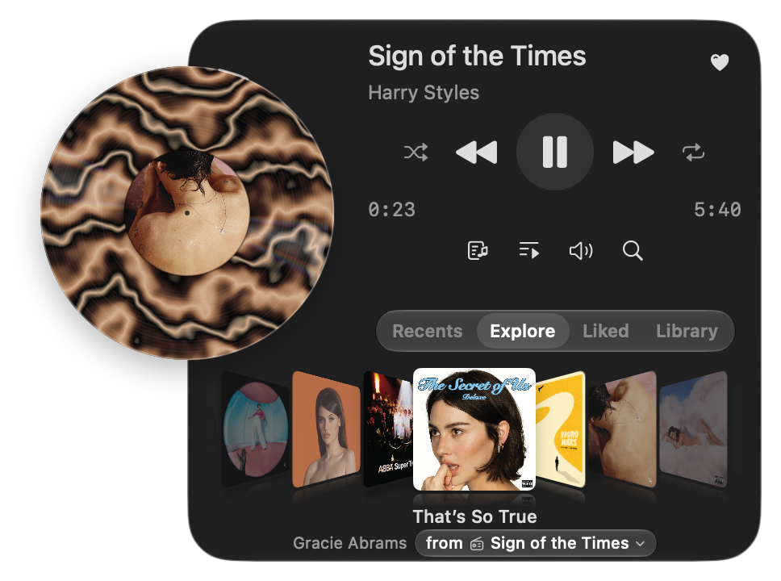
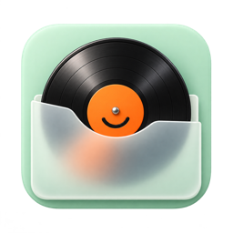

A fresh pressing. Every track.
Each song gets its own marbled record, with colors drawn from the album sleeve. Drag the vinyl to cue up your favorite part.
A Spotify player for your Mac
Your favorite songs, back in rotation.
A little record player in your menu bar. Put something good on and settle in.
macOS 26+ · Spotify Premium required · Setup required
SIDE A / NOW ON THE TURNTABLE
Put a favorite on. Browse a few sleeves.
Stay for the whole side.

SIDE B / THE DEEP CUTS
The little details that keep the music turning.
Each song gets its own marbled record, with colors drawn from the album sleeve. Drag the vinyl to cue up your favorite part.
Flip through your library in Cover Flow, like a crate of old favorites. Revisit recent listens, browse your liked songs, or dig for something new.
Live lyrics, when available, for the verses you know by heart and the ones you’re still learning. Sing along. Nobody’s keeping score.
Find your next track on Spotify, line up the queue, or reach for a keyboard shortcut. Spotify Connect keeps your music within reach.
Best enjoyed one good song at a time.
THE LINER NOTES
A few things to know before your first spin.

There’s a little setup before the music starts. Library access uses your own Spotify developer app.
http://127.0.0.1:8898/callback as a redirect URI.The current release is ad-hoc signed and not notarized. macOS may ask you to approve opening Bopify in System Settings → Privacy & Security.
Bopify is free, open-source software under the MIT license. Explore the source, report an issue, or make it your own on GitHub.
Bopify is an independent project and is not affiliated with Spotify.
MAKE ROOM FOR ONE MORE RECORD
For your Mac. For the love of music.